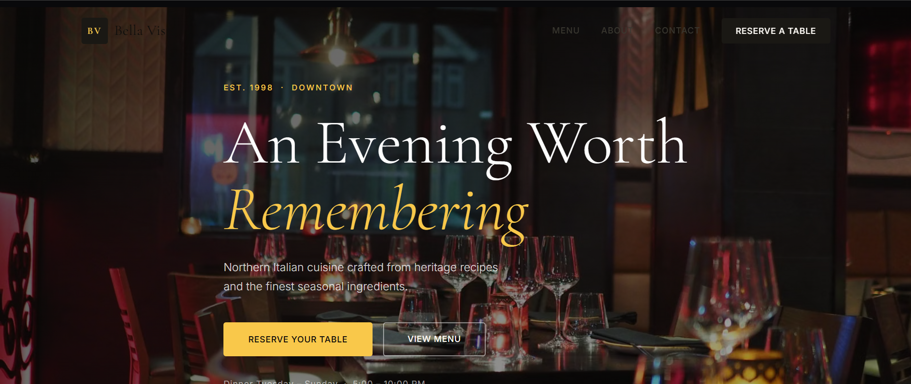
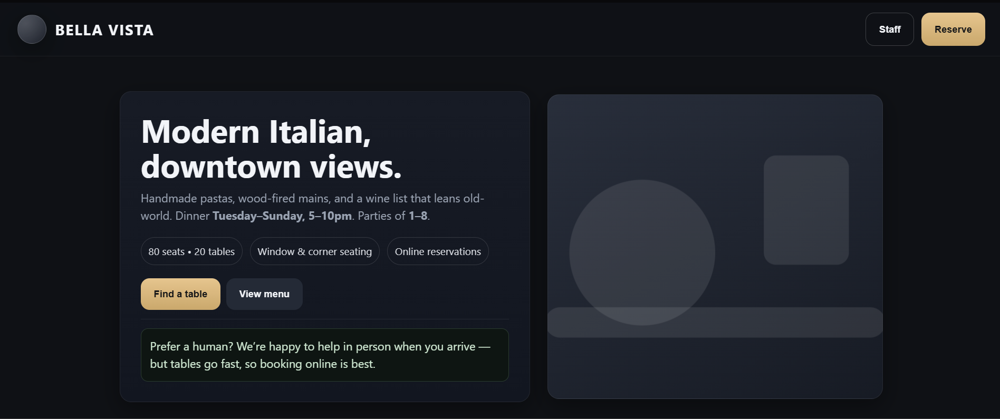
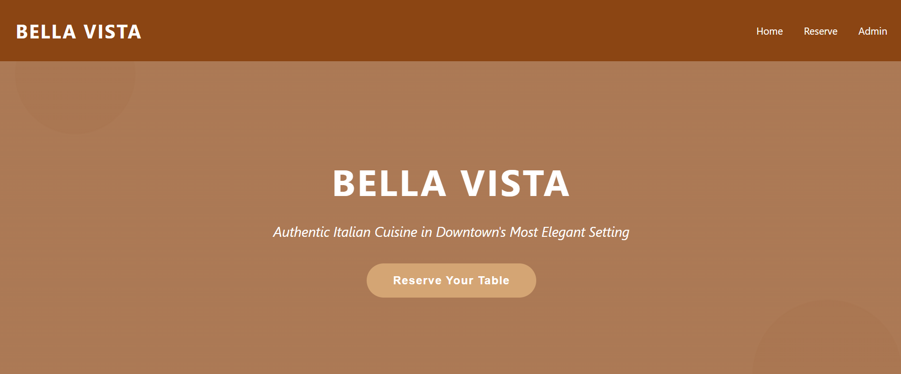
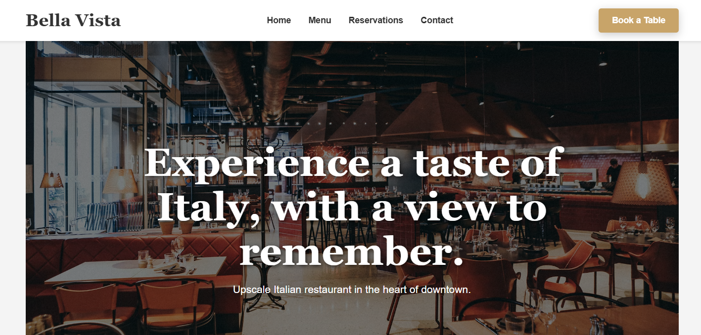

The rationale sounds like design. The interface isn't.
Generative UI tools narrate their own design decisions - a three-column grid, accessible contrast, keyboard-navigable tabs. We built a benchmark to check whether any of it is actually in the code. Across 120 generated interfaces, over a quarter of stated design rationales were never implemented.
We call the gap Design Theater: plausible, confident design reasoning that bears little relationship to the artifact it describes.
0.75
Mean thinking fidelity - 1 in 4 rationales unmet
34%
Failure rate on functional requirements
0.54
Mean adherence to UX principles in the prompt
120
Interfaces evaluated - 5 tools × 24 tasks
Claude

Bolt

ChatGPT

Vercel v0

Firebase
01
What user-facing design reasoning is
When you ask a tool for an interface, it usually explains itself first: what it will build, which principles it is honoring, what tradeoffs it made. That explanation is written for you, not for the compiler - nothing checks it against the output.
02
Why the gap matters
Design Theater is not a hallucination - it is a performance of design expertise. Fluent rationales invite less scrutiny, so the people now reviewing generated interfaces (product managers, engineers, first-time creators) may accept them precisely because they read as deliberate.
03
What the benchmark adds
Three metrics make three specific failure modes auditable: unimplemented rationales, missed UX obligations that were implied rather than stated, and homogenized design defaults dressed up as situated choices.